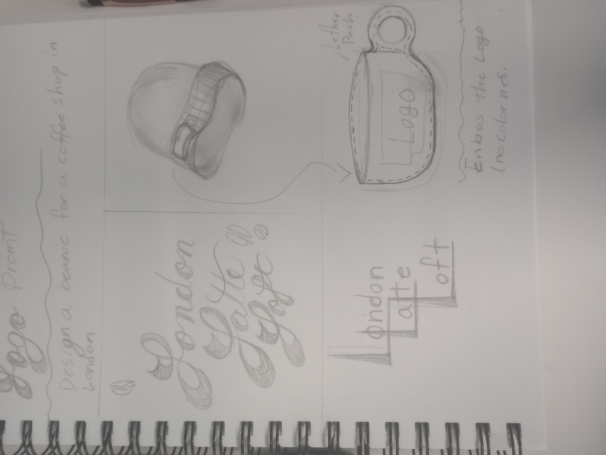
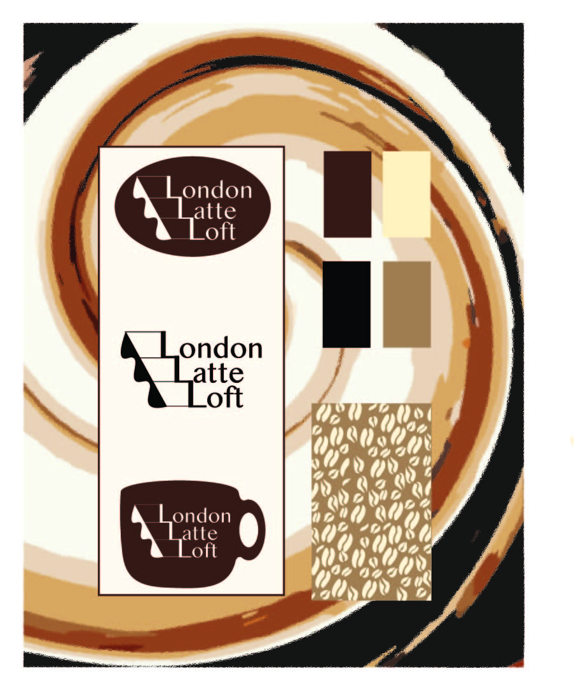
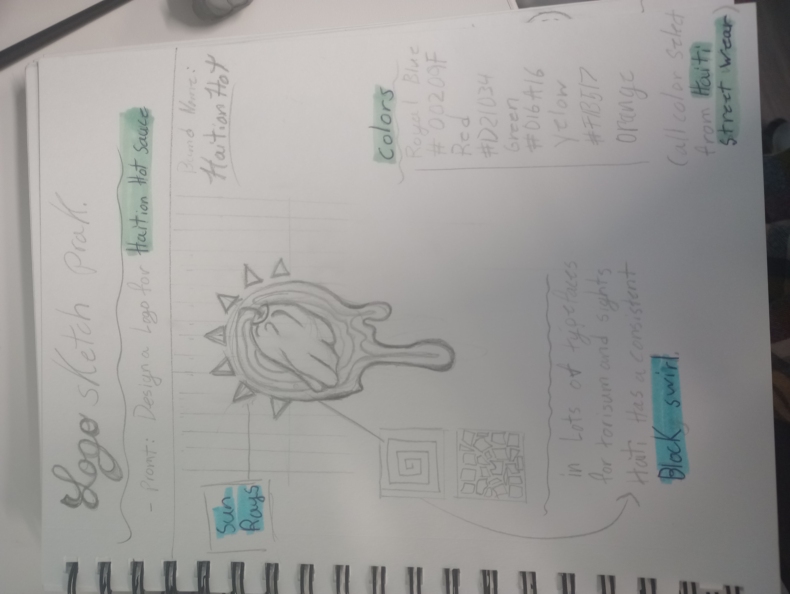
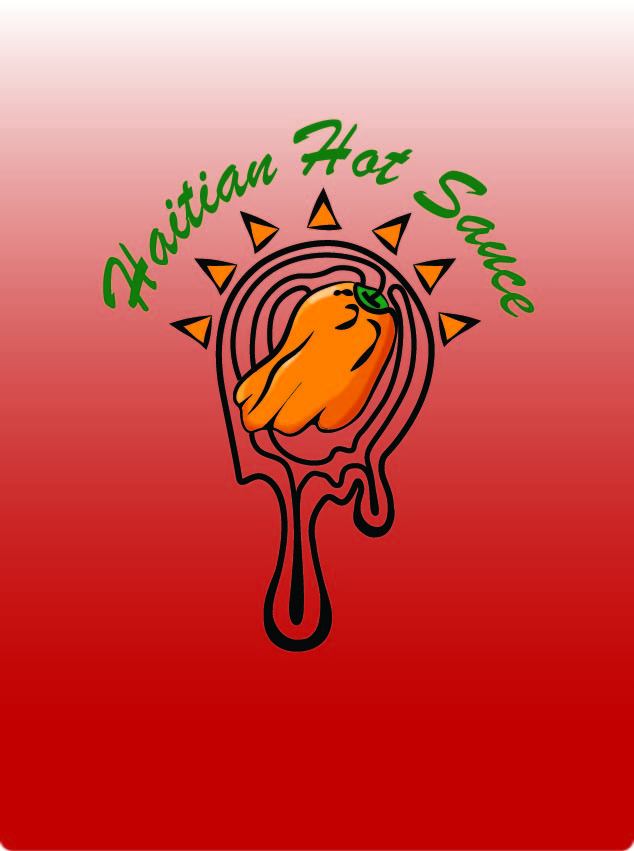

Services
1. Branding & Identity
Creating a strong brand identity is essential for standing out in today’s market. I specialize in developing cohesive branding strategies that include: Logo design Color palettes Typography selection Brand guidelines
sketch:
finished project:
2. Print Design
From brochures to posters, I design impactful print materials that engage your audience. My print design services include: Business cards Flyers Packaging Event materials
3. Digital Design
sketch:
finshed project:
In the digital age, having a strong online presence is crucial. I create visually appealing and user-friendly digital designs, including: Website design (responsive and user-centered) Social media graphics Email newsletters App interfaces
4. Illustration
Add a unique touch to your projects with custom illustrations. Whether for branding or storytelling, I provide: Hand-drawn illustrations Infographics Character design Editorial illustrations